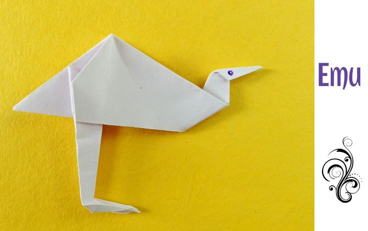

Learn to fold origami!
Turtle
Some cool facts about turtles:
-
All turtles lay eggs on the land.
-
There are over 300 species of turtles, tortoises, and terrapins combined!
-
Some tortoises can live for up to 150 years!
-
There are three types of turtles: turtles, tortoises, and terrapins.
Bird

Some cool facts about birds:
-
All modern birds evolved from dinosaurs with wings!
-
There are about 10000 different kinds of species of birds.
-
The bird that has the longest lifespan is the african grey.
-
Birds can live anywhere from 1-100 years!
-
Birds are one of the most common pets.
Emu

Some cool facts about emus:
-
Emus can jump 7 feet in the air!
-
Emus has two eyelids. One eyelid is used for blinking, while the other prevents dust and sand to enter the eyes.
-
Emus have two feathers per follicle, unlike most animals which only have 1 per follicle.
-
The emu can stride 9 feet (or 2.7 meters) if they are running.